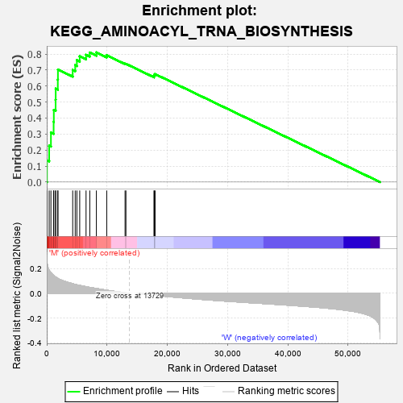
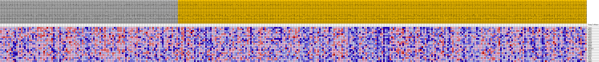
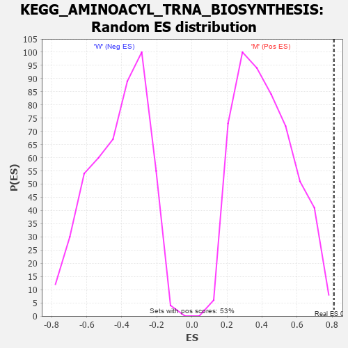

| Dataset | MUC16.MUC16.cls#M_versus_W.MUC16.cls#M_versus_W_repos |
| Phenotype | MUC16.cls#M_versus_W_repos |
| Upregulated in class | M |
| GeneSet | KEGG_AMINOACYL_TRNA_BIOSYNTHESIS |
| Enrichment Score (ES) | 0.81033003 |
| Normalized Enrichment Score (NES) | 1.9329222 |
| Nominal p-value | 0.0018903592 |
| FDR q-value | 0.04385272 |
| FWER p-Value | 0.126 |

| PROBE | DESCRIPTION (from dataset) | GENE SYMBOL | GENE_TITLE | RANK IN GENE LIST | RANK METRIC SCORE | RUNNING ES | CORE ENRICHMENT | |
|---|---|---|---|---|---|---|---|---|
| 1 | IARS2 | na | 30 | 0.260 | 0.1357 | Yes | ||
| 2 | MARS2 | na | 402 | 0.187 | 0.2270 | Yes | ||
| 3 | LARS2 | na | 694 | 0.167 | 0.3092 | Yes | ||
| 4 | FARSA | na | 1142 | 0.144 | 0.3768 | Yes | ||
| 5 | RARS2 | na | 1173 | 0.143 | 0.4511 | Yes | ||
| 6 | VARS2 | na | 1470 | 0.132 | 0.5149 | Yes | ||
| 7 | HARS2 | na | 1486 | 0.132 | 0.5837 | Yes | ||
| 8 | DARS2 | na | 1834 | 0.121 | 0.6408 | Yes | ||
| 9 | TARS2 | na | 1854 | 0.120 | 0.7035 | Yes | ||
| 10 | FARSB | na | 4305 | 0.078 | 0.6999 | Yes | ||
| 11 | EARS2 | na | 4721 | 0.072 | 0.7303 | Yes | ||
| 12 | MTFMT | na | 4997 | 0.069 | 0.7617 | Yes | ||
| 13 | YARS2 | na | 5469 | 0.064 | 0.7868 | Yes | ||
| 14 | SEPSECS | na | 6521 | 0.053 | 0.7957 | Yes | ||
| 15 | WARS2 | na | 7141 | 0.048 | 0.8096 | Yes | ||
| 16 | PARS2 | na | 8235 | 0.039 | 0.8103 | Yes | ||
| 17 | CARS2 | na | 9950 | 0.025 | 0.7925 | No | ||
| 18 | FARS2 | na | 12991 | 0.004 | 0.7398 | No | ||
| 19 | NARS2 | na | 13134 | 0.004 | 0.7391 | No | ||
| 20 | PSTK | na | 17798 | -0.015 | 0.6623 | No | ||
| 21 | SARS2 | na | 17828 | -0.015 | 0.6695 | No | ||
| 22 | AARS2 | na | 17974 | -0.016 | 0.6750 | No |

